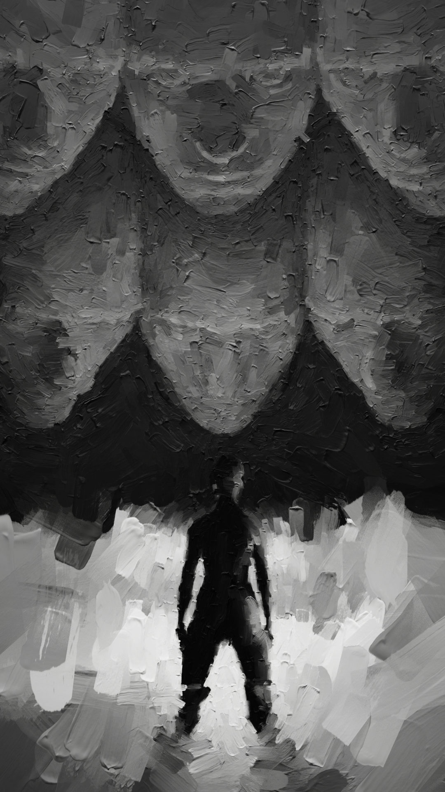

HAGGARD

IRL or URL? Do it right and online is real. By emulating the texture of traditional painting to create surreal digital works, INSIDE takes the conflict of deciphering mediums—Can I trust this feeling? Are things what they appear?—and applies it to our inner worlds, creating complex emotional landscapes to traverse.
